2023 National 5 Chemistry - Paper 2 questions
Source: Scottish Qualifications Authority (SQA) / Qualifications Scotland. This is a StemInteract HTML companion, not an official HTML edition. Selectable text is supplied alongside original page images. Use the images or original PDF for equations, powers, fractions, vector notation, tables and diagrams; text extraction cannot fully preserve mathematical layout.
Jump to a question
PDF page 1
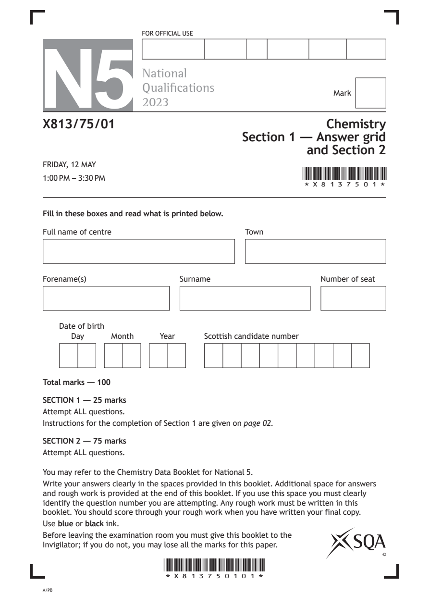
Selectable page text
FOR OFFICIAL USE
N5
National
Qualications
Mark
2023
X813/75/01 Chemistry
Section 1 — Answer grid
and Section 2
FRIDAY, 12 MAY
1:00 PM – 3:30 PM
*X8137501*
Fill in these boxes and read what is printed below.
Full name of centre Town
Forename(s) Surname Number of seat
Date of birth
Day Month Year Scottish candidate number
Total marks — 100
SECTION 1 — 25 marks
Attempt ALL questions.
Instructions for the completion of Section 1 are given on page 02.
SECTION 2 — 75 marks
Attempt ALL questions.
You may refer to the Chemistry Data Booklet for National 5.
Write your answers clearly in the spaces provided in this booklet. Additional space for answers
and rough work is provided at the end of this booklet. If you use this space you must clearly
identify the question number you are attempting. Any rough work must be written in this
booklet. You should score through your rough work when you have written your final copy.
Use blue or black ink.
Before leaving the examination room you must give this booklet to the
Invigilator; if you do not, you may lose all the marks for this paper.
©
*X813750101*
A/PBPDF page 2

Selectable page text
SECTION 1 — 25 marks
The questions for Section 1 are contained in the question paper X813/75/02.
Read these and record your answers on the answer grid on page 03 opposite.
Use blue or black ink. Do NOT use gel pens or pencil.
1. The answer to each question is either A, B, C or D. Decide what your answer is, then fill in
the appropriate bubble (see sample question below).
2. There is only one correct answer to each question.
3. Any rough working should be done on the additional space for answers and rough work at
the end of this booklet.
Sample question
To show that the ink in a ball-pen consists of a mixture of dyes, the method of separation would
be
A fractional distillation
B chromatography
C fractional crystallisation
D filtration.
The correct answer is B — chromatography. The answer B bubble has been clearly filled in (see
below).
A B C D
Changing an answer
If you decide to change your answer, cancel your first answer by putting a cross through it (see
below) and fill in the answer you want. The answer below has been changed to D.
A B C D
If you then decide to change back to an answer you have already scored out, put a tick (✓) to the
right of the answer you want, as shown below:
A B C D A B C D
or
*X813750102*
page 02PDF page 3

Selectable page text
SECTION 1 — Answer grid
*OBJ25AD1*
A B C D
1
2
3
4
5
6
7
8
9
10
11
12
13
14
15
16
17
18
19
20
21
22
23
24
25
*X813750103*
page 03 [Turn overPDF page 4

Selectable page text
[BLANK PAGE]
DO NOT WRITE ON THIS PAGE
*X813750104*
page 04PDF page 5
Paper 2, Question 1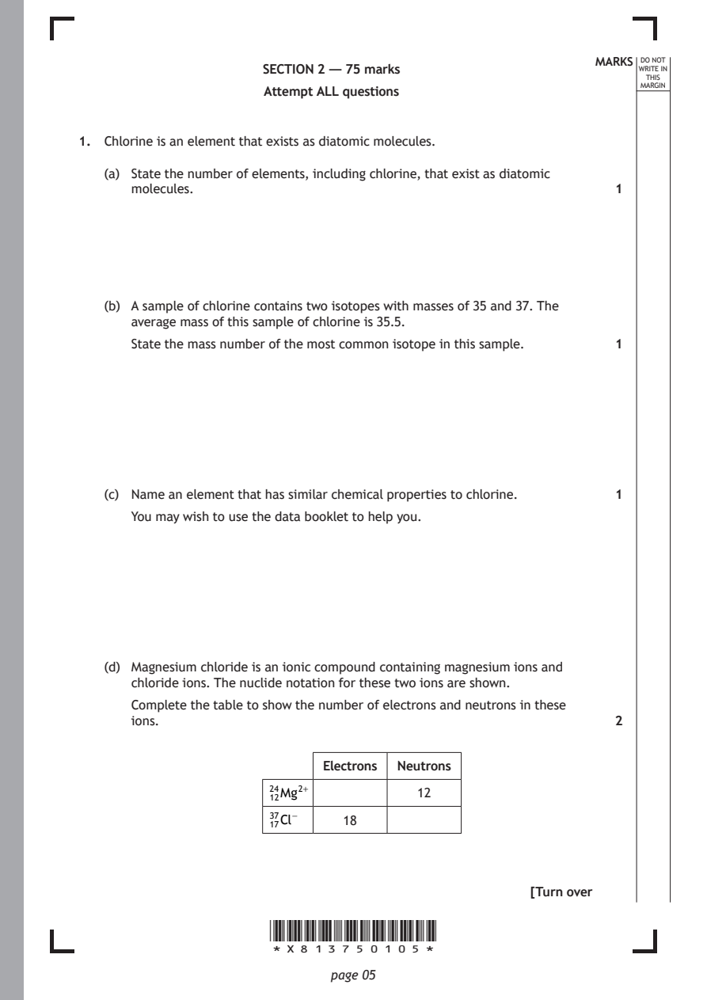
Selectable page text
MARKS _{W}^{D}_{R}^{O}_{I} _{T}^{N}OT
SECTION 2 — 75 marks E IN
THIS
Attempt ALL questions MARGIN
1. Chlorine is an element that exists as diatomic molecules.
(a) State the number of elements, including chlorine, that exist as diatomic
molecules. 1
(b) A sample of chlorine contains two isotopes with masses of 35 and 37. The
average mass of this sample of chlorine is 35.5.
State the mass number of the most common isotope in this sample. 1
(c) Name an element that has similar chemical properties to chlorine. 1
You may wish to use the data booklet to help you.
(d) Magnesium chloride is an ionic compound containing magnesium ions and
chloride ions. The nuclide notation for these two ions are shown.
Complete the table to show the number of electrons and neutrons in these
ions. 2
Electrons Neutrons
24Mg²⁺ 12
12
37Cl⁻ 18
17
[Turn over
*X813750105*
page 05PDF page 6
Paper 2, Question 2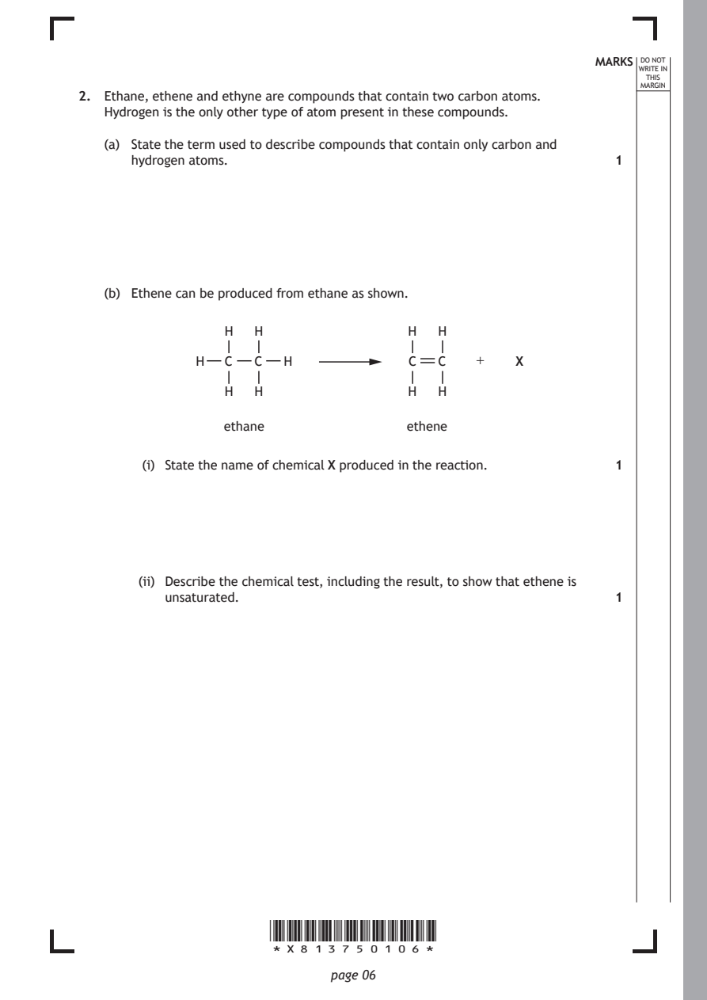
Selectable page text
MARKS _{W}^{D}_{R}^{O}_{I} _{T}^{N}OT
E IN
THIS
MARGIN
2. Ethane, ethene and ethyne are compounds that contain two carbon atoms.
Hydrogen is the only other type of atom present in these compounds.
(a) State the term used to describe compounds that contain only carbon and
hydrogen atoms. 1
(b) Ethene can be produced from ethane as shown.
H H H H
H C C H C C + X
H H H H
ethane ethene
(i) State the name of chemical X produced in the reaction. 1
(ii) Describe the chemical test, including the result, to show that ethene is
unsaturated. 1
*X813750106*
page 06PDF page 7
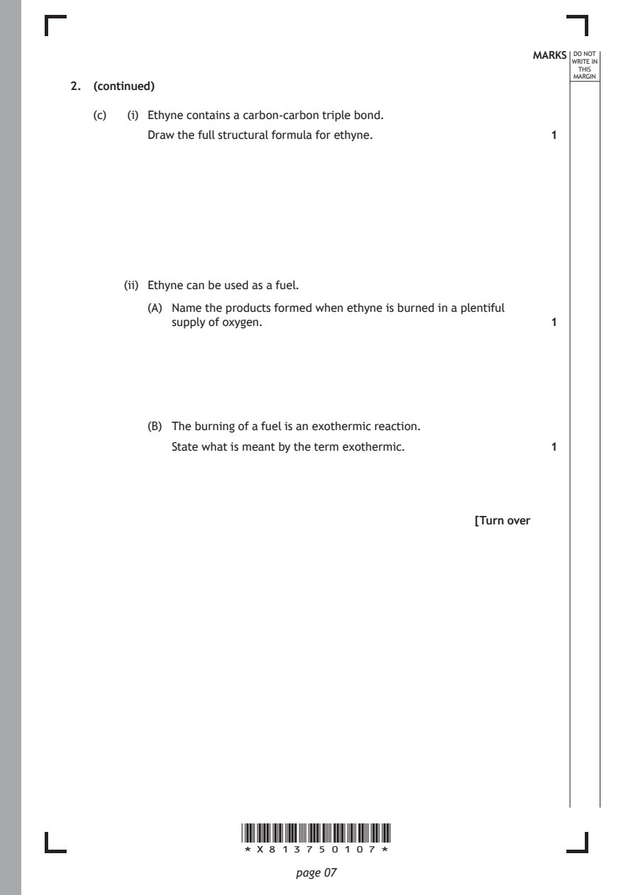
Selectable page text
MARKS _{W}^{D}_{R}^{O}_{I} _{T}^{N}OT
E IN
THIS
MARGIN
2. (continued)
(c) (i) Ethyne contains a carbon-carbon triple bond.
Draw the full structural formula for ethyne. 1
(ii) Ethyne can be used as a fuel.
(A) Name the products formed when ethyne is burned in a plentiful
supply of oxygen. 1
(B) The burning of a fuel is an exothermic reaction.
State what is meant by the term exothermic. 1
[Turn over
*X813750107*
page 07PDF page 8
Paper 2, Question 3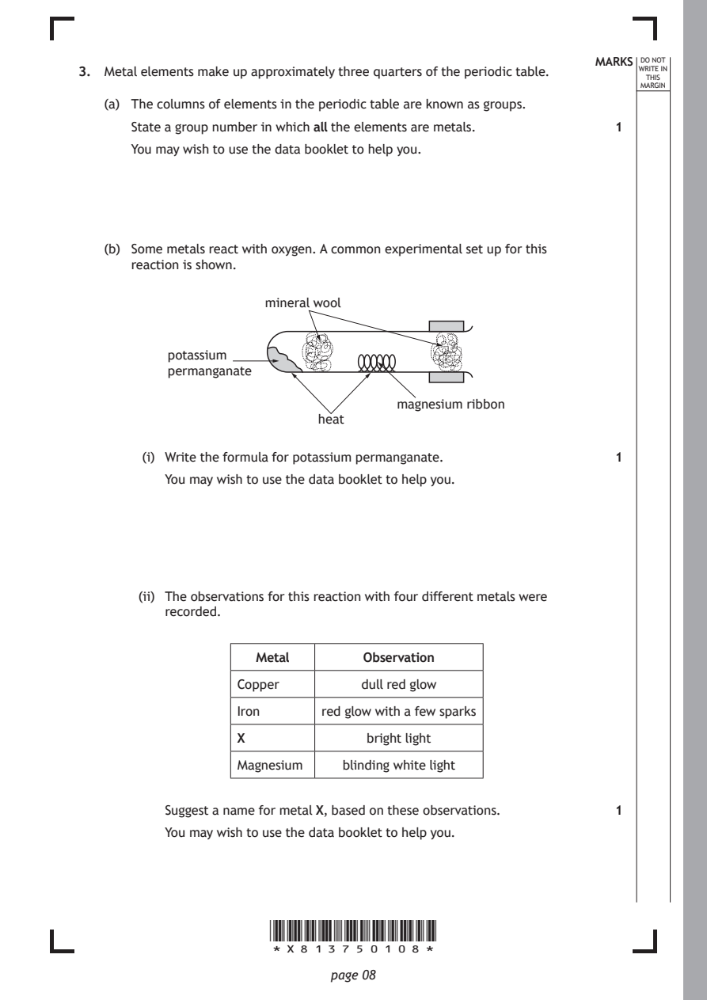
Selectable page text
MARKS _{W}^{D}_{R}^{O}_{I} _{T}^{N}OT
3. Metal elements make up approximately three quarters of the periodic table. E IN
THIS
MARGIN
(a) The columns of elements in the periodic table are known as groups.
State a group number in which all the elements are metals. 1
You may wish to use the data booklet to help you.
(b) Some metals react with oxygen. A common experimental set up for this
reaction is shown.
mineral wool
potassium
permanganate
magnesium ribbon
heat
(i) Write the formula for potassium permanganate. 1
You may wish to use the data booklet to help you.
(ii) The observations for this reaction with four different metals were
recorded.
Metal Observation
Copper dull red glow
Iron red glow with a few sparks
X bright light
Magnesium blinding white light
Suggest a name for metal X, based on these observations. 1
You may wish to use the data booklet to help you.
*X813750108*
page 08PDF page 9
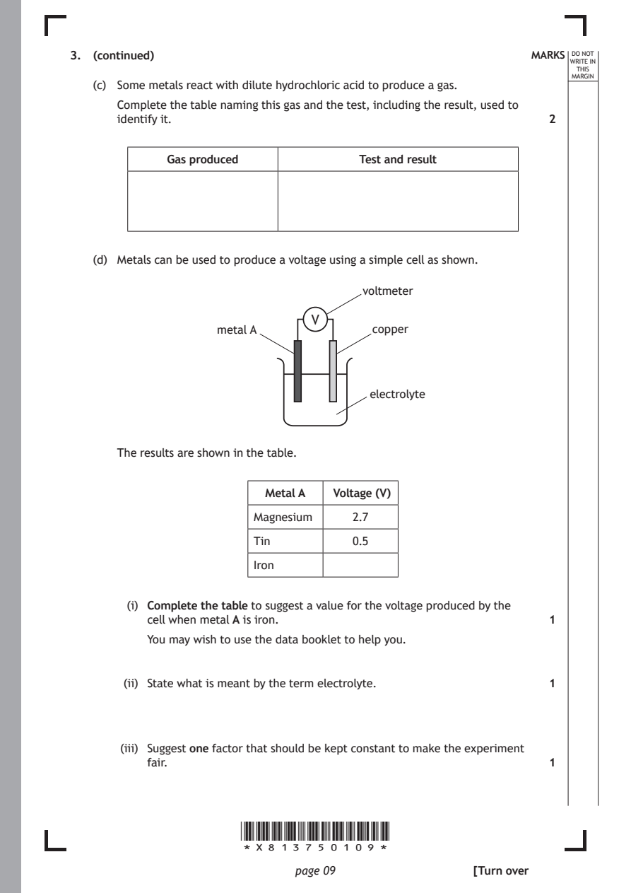
Selectable page text
3. (continued) MARKS _{W}^{D}_{R}^{O}_{I} _{T}^{N}OT
E IN
THIS
MARGIN
(c) Some metals react with dilute hydrochloric acid to produce a gas.
Complete the table naming this gas and the test, including the result, used to
identify it. 2
Gas produced Test and result
(d) Metals can be used to produce a voltage using a simple cell as shown.
voltmeter
V
metal A copper
electrolyte
The results are shown in the table.
Metal A Voltage (V)
Magnesium 2.7
Tin 0.5
Iron
(i) Complete the table to suggest a value for the voltage produced by the
cell when metal A is iron. 1
You may wish to use the data booklet to help you.
(ii) State what is meant by the term electrolyte. 1
(iii) Suggest one factor that should be kept constant to make the experiment
fair. 1
*X813750109*
page 09 [Turn overPDF page 10
Paper 2, Question 4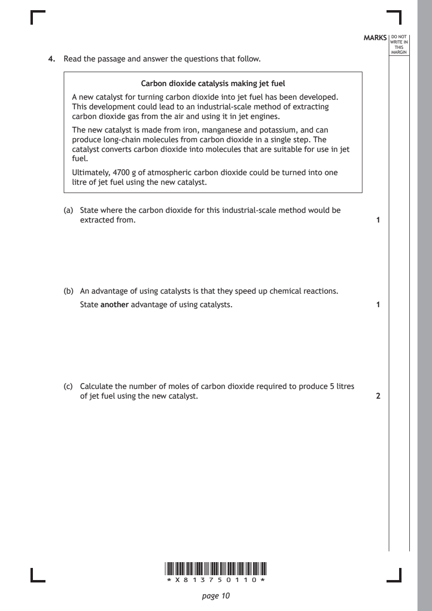
Selectable page text
MARKS _{W}^{D}_{R}^{O}_{I} _{T}^{N}OT
E IN
THIS
MARGIN
4. Read the passage and answer the questions that follow.
Carbon dioxide catalysis making jet fuel
A new catalyst for turning carbon dioxide into jet fuel has been developed.
This development could lead to an industrial-scale method of extracting
carbon dioxide gas from the air and using it in jet engines.
The new catalyst is made from iron, manganese and potassium, and can
produce long-chain molecules from carbon dioxide in a single step. The
catalyst converts carbon dioxide into molecules that are suitable for use in jet
fuel.
Ultimately, 4700 g of atmospheric carbon dioxide could be turned into one
litre of jet fuel using the new catalyst.
(a) State where the carbon dioxide for this industrial-scale method would be
extracted from. 1
(b) An advantage of using catalysts is that they speed up chemical reactions.
State another advantage of using catalysts. 1
(c) Calculate the number of moles of carbon dioxide required to produce 5 litres
of jet fuel using the new catalyst. 2
*X813750110*
page 10PDF page 11
Paper 2, Question 5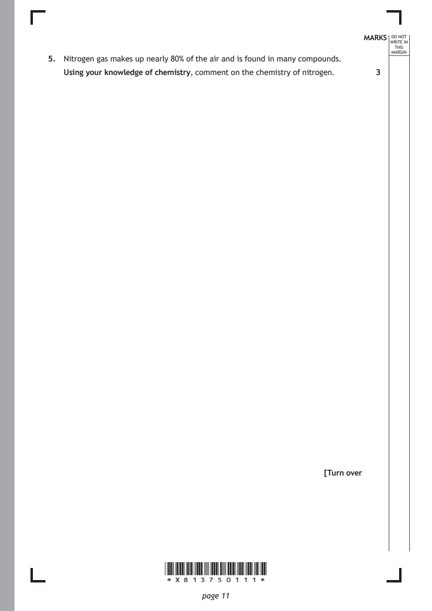
Selectable page text
MARKS _{W}^{D}_{R}^{O}_{I} _{T}^{N}OT
E IN
THIS
MARGIN
5. Nitrogen gas makes up nearly 80% of the air and is found in many compounds.
Using your knowledge of chemistry, comment on the chemistry of nitrogen. 3
[Turn over
*X813750111*
page 11PDF page 12
Paper 2, Question 6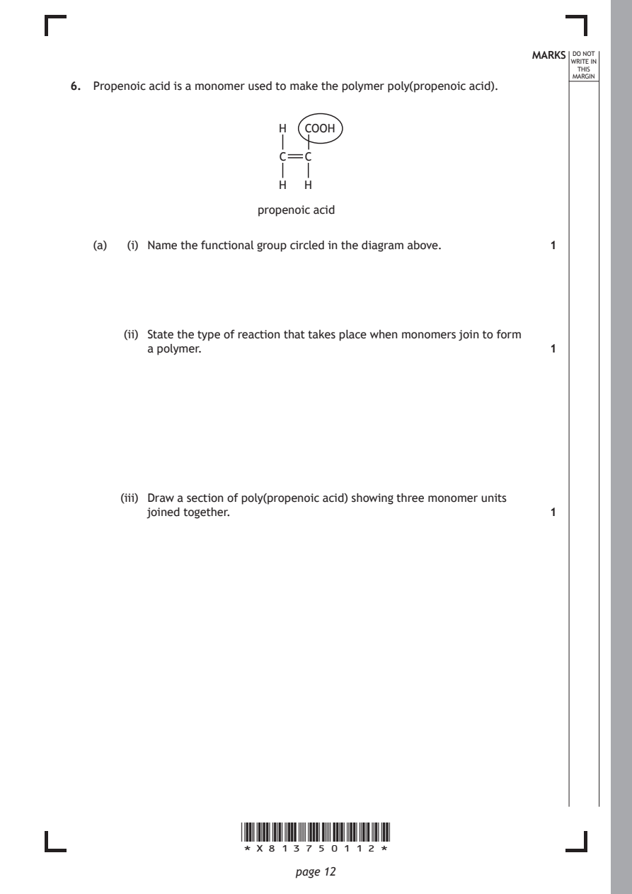
Selectable page text
MARKS _{W}^{D}_{R}^{O}_{I} _{T}^{N}OT
E IN
THIS
MARGIN
6. Propenoic acid is a monomer used to make the polymer poly(propenoic acid).
H COOH
C C
H H
propenoic acid
(a) (i) Name the functional group circled in the diagram above. 1
(ii) State the type of reaction that takes place when monomers join to form
a polymer. 1
(iii) Draw a section of poly(propenoic acid) showing three monomer units
joined together. 1
*X813750112*
page 12PDF page 13
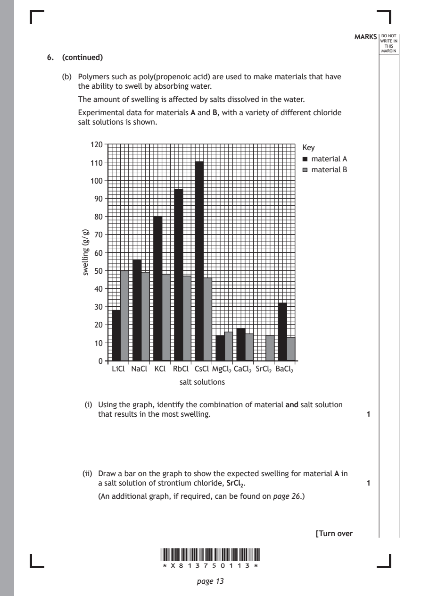
Selectable page text
MARKS _{W}^{D}_{R}^{O}_{I} _{T}^{N}OT
E IN
THIS
MARGIN
6. (continued)
(b) Polymers such as poly(propenoic acid) are used to make materials that have
the ability to swell by absorbing water.
The amount of swelling is affected by salts dissolved in the water.
Experimental data for materials A and B, with a variety of different chloride
salt solutions is shown.
*X813750113*
page 13
)g/g(
gnillews
120
Key
material A
110
material B
100
90
80
70
60
50
40
30
20
10
0
LiCl NaCl KCl RbCl CsCl MgCl₂ CaCl₂ SrCl₂ BaCl₂
salt solutions
(i) Using the graph, identify the combination of material and salt solution
that results in the most swelling. 1
(ii) Draw a bar on the graph to show the expected swelling for material A in
a salt solution of strontium chloride, SrCl₂. 1
(An additional graph, if required, can be found on page 26.)
[Turn overPDF page 14
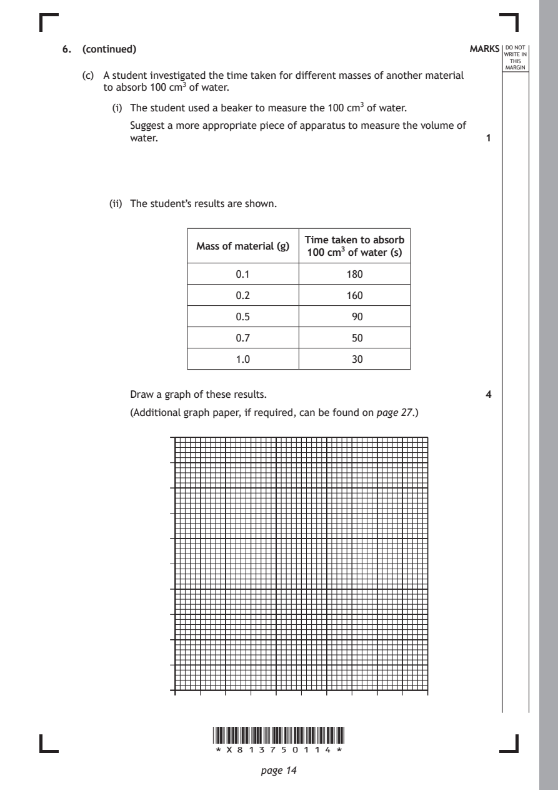
Selectable page text
6. (continued) MARKS _{W}^{D}_{R}^{O}_{I} _{T}^{N}OT
E IN
THIS
MARGIN
(c) A student investigated the time taken for different masses of another material
to absorb 100 cm³ of water.
(i) The student used a beaker to measure the 100 cm³ of water.
Suggest a more appropriate piece of apparatus to measure the volume of
water. 1
(ii) The student’s results are shown.
Time taken to absorb
Mass of material (g)
100 cm³ of water (s)
0.1 180
0.2 160
0.5 90
0.7 50
1.0 30
Draw a graph of these results. 4
(Additional graph paper, if required, can be found on page 27.)
*X813750114*
page 14PDF page 15
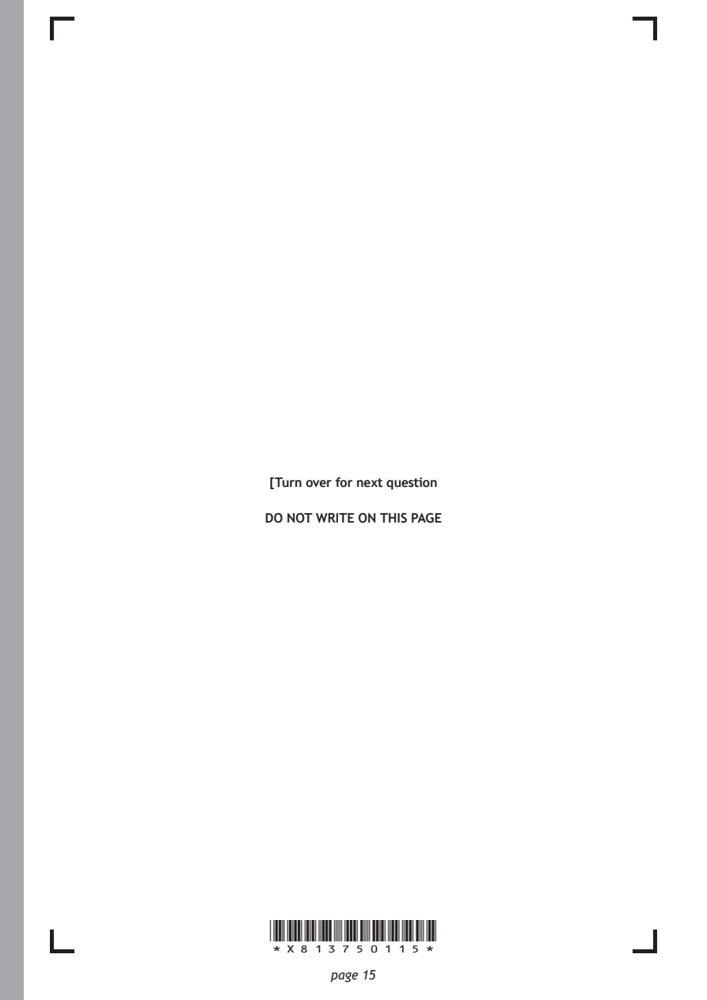
Selectable page text
[Turn over for next question
DO NOT WRITE ON THIS PAGE
*X813750115*
page 15PDF page 16
Paper 2, Question 7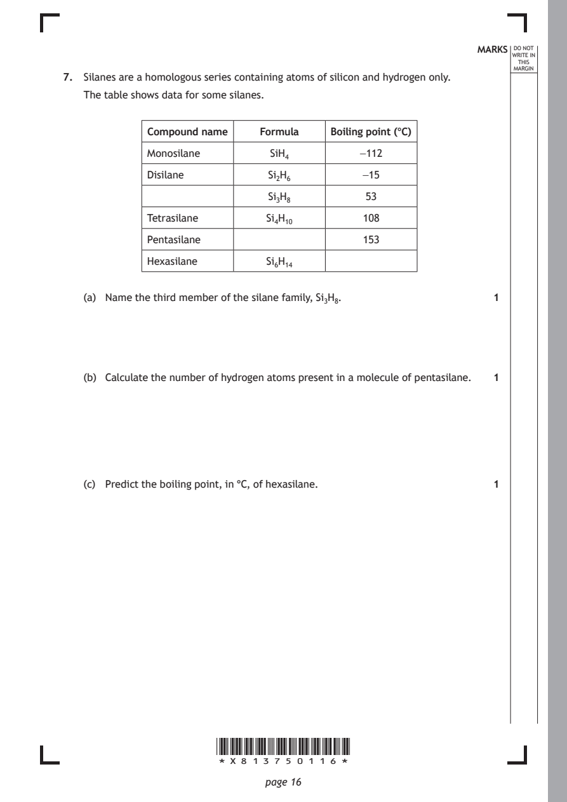
Selectable page text
MARKS _{W}^{D}_{R}^{O}_{I} _{T}^{N}OT
E IN
THIS
MARGIN
7. Silanes are a homologous series containing atoms of silicon and hydrogen only.
The table shows data for some silanes.
Compound name Formula Boiling point (°C)
Monosilane SiH₄ -112
Disilane Si₂H₆ -15
Si₃H₈ 53
Tetrasilane Si₄H₁₀ 108
Pentasilane 153
Hexasilane Si₆H₁₄
(a) Name the third member of the silane family, Si₃H₈. 1
(b) Calculate the number of hydrogen atoms present in a molecule of pentasilane. 1
(c) Predict the boiling point, in °C, of hexasilane. 1
*X813750116*
page 16PDF page 17
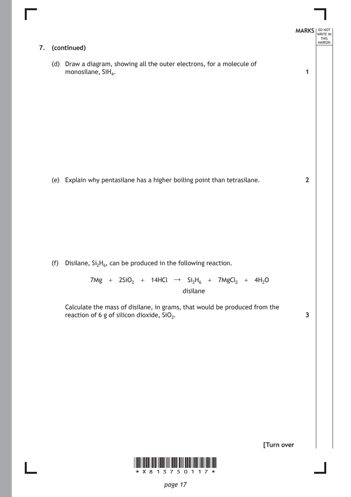
Selectable page text
MARKS _{W}^{D}_{R}^{O}_{I} _{T}^{N}OT
E IN
THIS
MARGIN
7. (continued)
(d) Draw a diagram, showing all the outer electrons, for a molecule of
monosilane, SiH₄. 1
(e) Explain why pentasilane has a higher boiling point than tetrasilane. 2
(f) Disilane, Si₂H₆, can be produced in the following reaction.
7Mg + 2SiO₂ + 14HCl ↓ Si₂H₆ + 7MgCl₂ + 4H₂O
disilane
Calculate the mass of disilane, in grams, that would be produced from the
reaction of 6 g of silicon dioxide, SiO₂. 3
[Turn over
*X813750117*
page 17PDF page 18
Paper 2, Question 8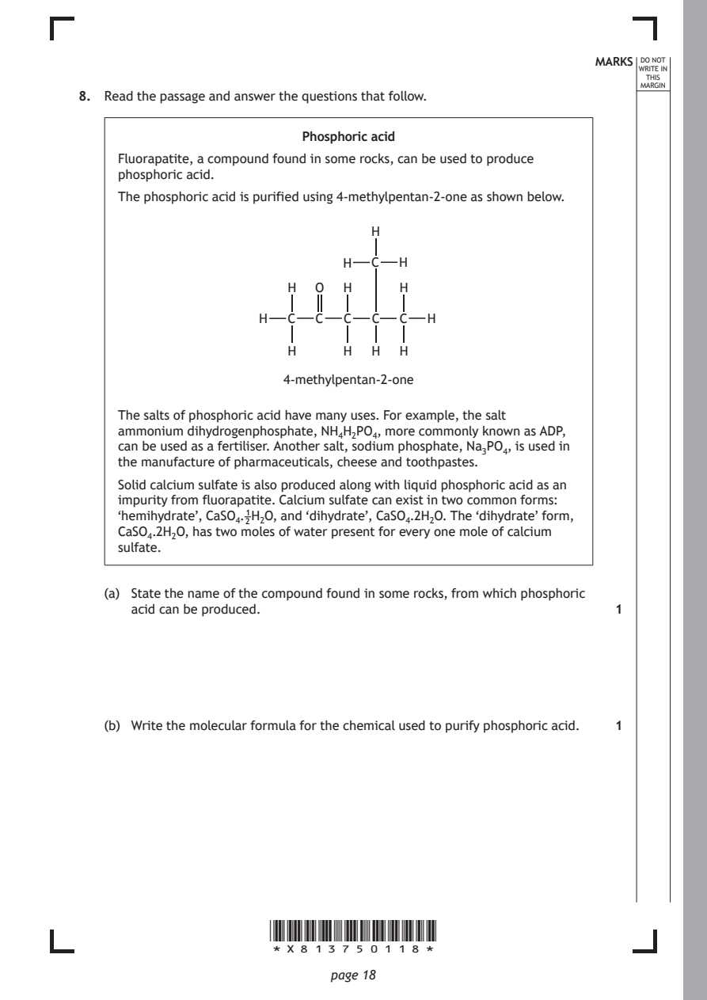
Selectable page text
MARKS _{W}^{D}_{R}^{O}_{I} _{T}^{N}OT
E IN
THIS
MARGIN
8. Read the passage and answer the questions that follow.
Phosphoric acid
Fluorapatite, a compound found in some rocks, can be used to produce
phosphoric acid.
The phosphoric acid is purified using 4-methylpentan-2-one as shown below.
H
H C H
H O H H
H C C C C C H
H H H H
4-methylpentan-2-one
The salts of phosphoric acid have many uses. For example, the salt
ammonium dihydrogenphosphate, NH₄H₂PO₄, more commonly known as ADP,
can be used as a fertiliser. Another salt, sodium phosphate, Na₃PO₄, is used in
the manufacture of pharmaceuticals, cheese and toothpastes.
Solid calcium sulfate is also produced along with liquid phosphoric acid as an
impurity from fluorapatite. Calcium sulfate can exist in two common forms:
‘hemihydrate’, CaSO₄.¹H₂O, and ‘dihydrate’, CaSO₄.2H₂O. The ‘dihydrate’ form,
CaSO₄.2H₂O, has two m²oles of water present for every one mole of calcium
sulfate.
(a) State the name of the compound found in some rocks, from which phosphoric
acid can be produced. 1
(b) Write the molecular formula for the chemical used to purify phosphoric acid. 1
*X813750118*
page 18PDF page 19
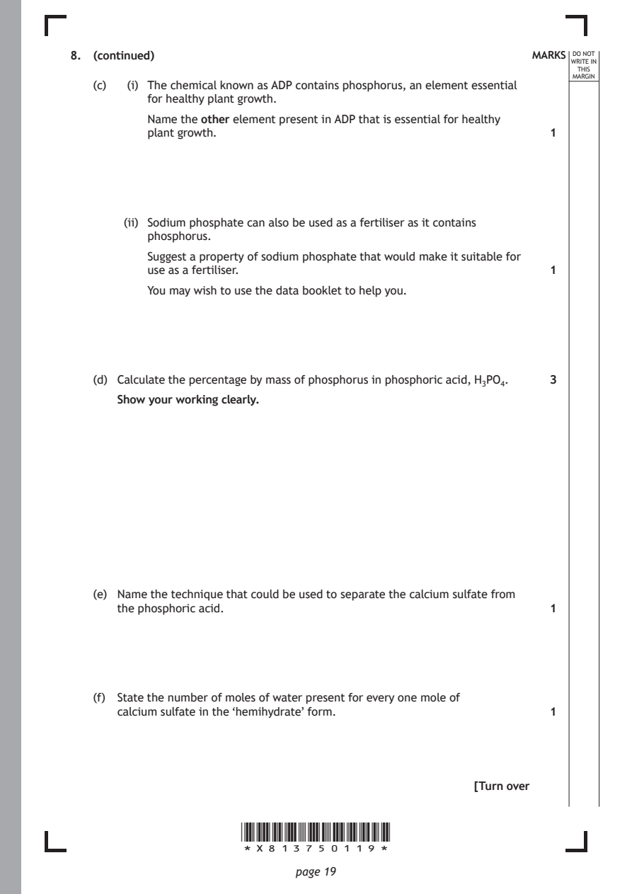
Selectable page text
8. (continued) MARKS _{W}^{D}_{R}^{O}_{I} _{T}^{N}OT
E IN
THIS
MARGIN
(c) (i) The chemical known as ADP contains phosphorus, an element essential
for healthy plant growth.
Name the other element present in ADP that is essential for healthy
plant growth. 1
(ii) Sodium phosphate can also be used as a fertiliser as it contains
phosphorus.
Suggest a property of sodium phosphate that would make it suitable for
use as a fertiliser. 1
You may wish to use the data booklet to help you.
(d) Calculate the percentage by mass of phosphorus in phosphoric acid, H₃PO₄. 3
Show your working clearly.
(e) Name the technique that could be used to separate the calcium sulfate from
the phosphoric acid. 1
(f) State the number of moles of water present for every one mole of
calcium sulfate in the ‘hemihydrate’ form. 1
[Turn over
*X813750119*
page 19PDF page 20
Paper 2, Question 9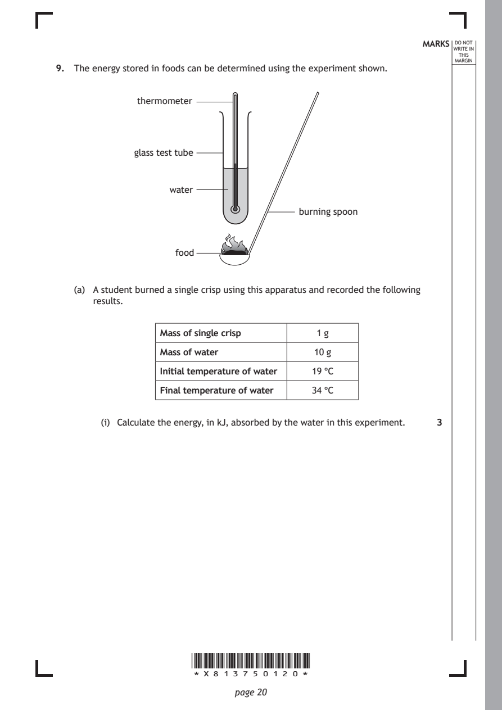
Selectable page text
MARKS _{W}^{D}_{R}^{O}_{I} _{T}^{N}OT
E IN
THIS
MARGIN
9. The energy stored in foods can be determined using the experiment shown.
thermometer
glass test tube
water
burning spoon
food
(a) A student burned a single crisp using this apparatus and recorded the following
results.
Mass of single crisp 1 g
Mass of water 10 g
Initial temperature of water 19 °C
Final temperature of water 34 °C
(i) Calculate the energy, in kJ, absorbed by the water in this experiment. 3
*X813750120*
page 20PDF page 21
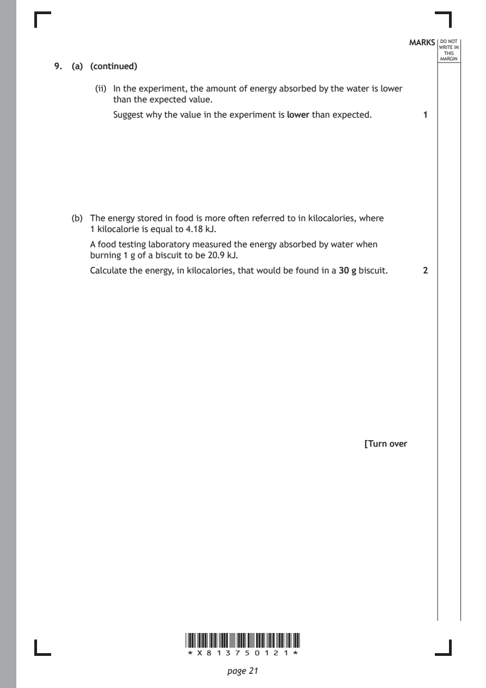
Selectable page text
MARKS _{W}^{D}_{R}^{O}_{I} _{T}^{N}OT
E IN
THIS
MARGIN
9. (a) (continued)
(ii) In the experiment, the amount of energy absorbed by the water is lower
than the expected value.
Suggest why the value in the experiment is lower than expected. 1
(b) The energy stored in food is more often referred to in kilocalories, where
1 kilocalorie is equal to 4.18 kJ.
A food testing laboratory measured the energy absorbed by water when
burning 1 g of a biscuit to be 20.9 kJ.
Calculate the energy, in kilocalories, that would be found in a 30 g biscuit. 2
[Turn over
*X813750121*
page 21PDF page 22
Paper 2, Question 10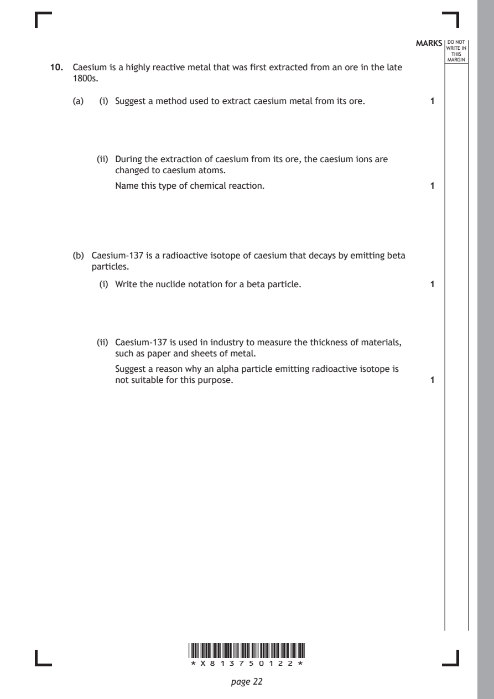
Selectable page text
MARKS _{W}^{D}_{R}^{O}_{I} _{T}^{N}OT
E IN
THIS
MARGIN
10. Caesium is a highly reactive metal that was first extracted from an ore in the late
1800s.
(a) (i) Suggest a method used to extract caesium metal from its ore. 1
(ii) During the extraction of caesium from its ore, the caesium ions are
changed to caesium atoms.
Name this type of chemical reaction. 1
(b) Caesium-137 is a radioactive isotope of caesium that decays by emitting beta
particles.
(i) Write the nuclide notation for a beta particle. 1
(ii) Caesium-137 is used in industry to measure the thickness of materials,
such as paper and sheets of metal.
Suggest a reason why an alpha particle emitting radioactive isotope is
not suitable for this purpose. 1
*X813750122*
page 22PDF page 23
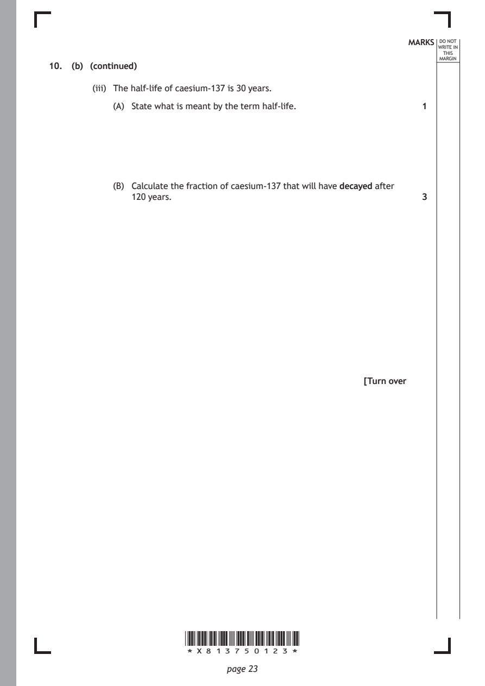
Selectable page text
MARKS _{W}^{D}_{R}^{O}_{I} _{T}^{N}OT
E IN
THIS
MARGIN
10. (b) (continued)
(iii) The half-life of caesium-137 is 30 years.
(A) State what is meant by the term half-life. 1
(B) Calculate the fraction of caesium-137 that will have decayed after
120 years. 3
[Turn over
*X813750123*
page 23PDF page 24
Paper 2, Question 11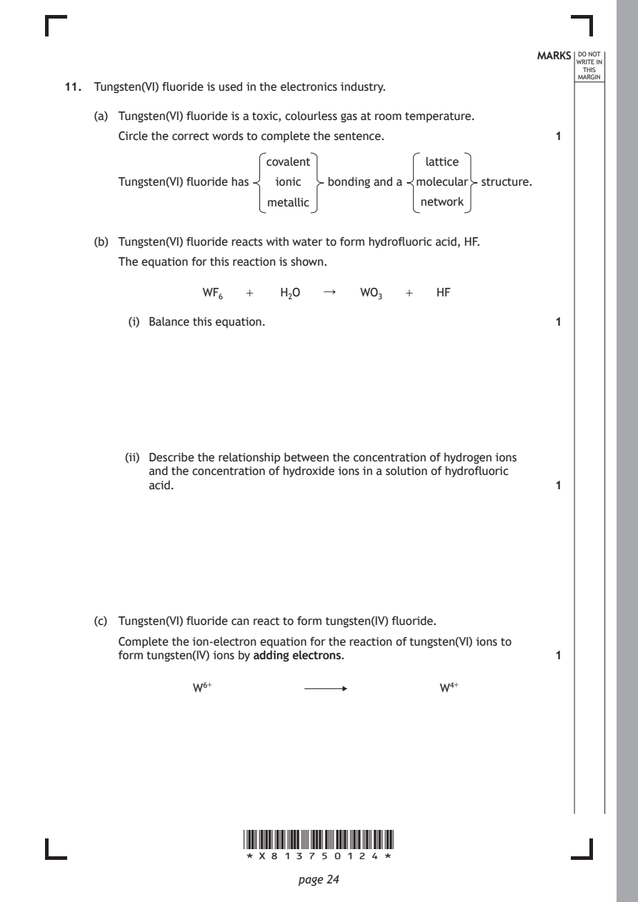
Selectable page text
MARKS _{W}^{D}_{R}^{O}_{I} _{T}^{N}OT
E IN
THIS
MARGIN
11. Tungsten(VI) fluoride is used in the electronics industry.
(a) Tungsten(VI) fluoride is a toxic, colourless gas at room temperature.
Circle the correct words to complete the sentence. 1
covalent lattice
Tungsten(VI) fluoride has ionic bonding and a molecular structure.
metallic network
(b) Tungsten(VI) fluoride reacts with water to form hydrofluoric acid, HF.
The equation for this reaction is shown.
WF₆ + H₂O ↓ WO₃ + HF
(i) Balance this equation. 1
(ii) Describe the relationship between the concentration of hydrogen ions
and the concentration of hydroxide ions in a solution of hydrofluoric
acid. 1
(c) Tungsten(VI) fluoride can react to form tungsten(IV) fluoride.
Complete the ion-electron equation for the reaction of tungsten(VI) ions to
form tungsten(IV) ions by adding electrons. 1
W⁶⁺ W⁴⁺
*X813750124*
page 24PDF page 25
Paper 2, Question 12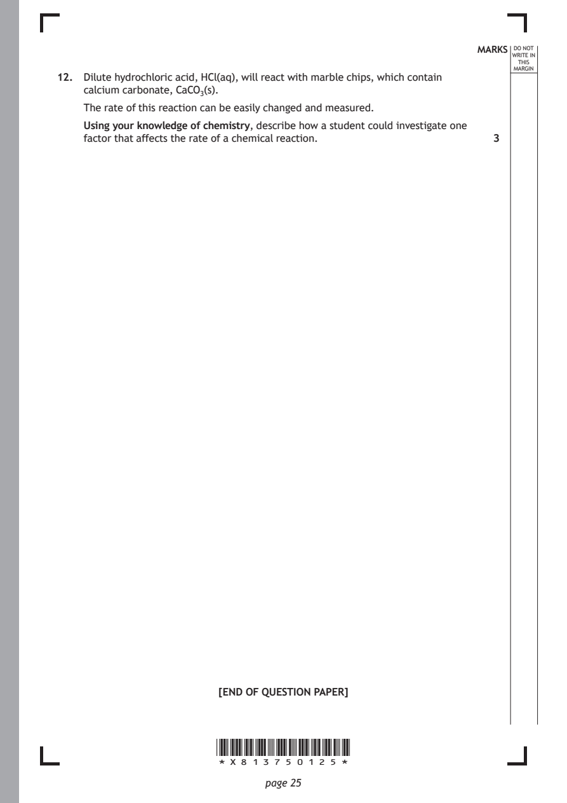
Selectable page text
MARKS _{W}^{D}_{R}^{O}_{I} _{T}^{N}OT
E IN
THIS
MARGIN
12. Dilute hydrochloric acid, HCl(aq), will react with marble chips, which contain
calcium carbonate, CaCO₃(s).
The rate of this reaction can be easily changed and measured.
Using your knowledge of chemistry, describe how a student could investigate one
factor that affects the rate of a chemical reaction. 3
[END OF QUESTION PAPER]
*X813750125*
page 25PDF page 26
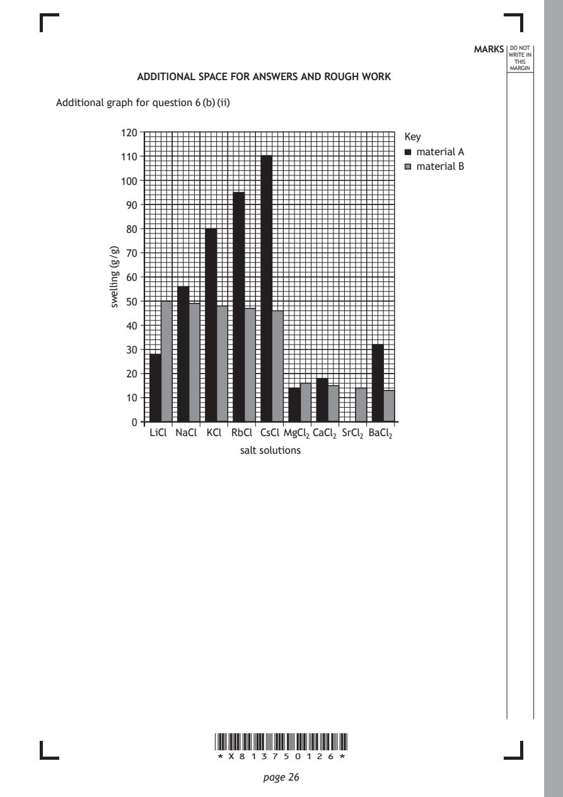
Selectable page text
MARKS _{W}^{D}_{R}^{O}_{I} _{T}^{N}OT
E IN
THIS
MARGIN
ADDITIONAL SPACE FOR ANSWERS AND ROUGH WORK
Additional graph for question 6 (b) (ii)
*X813750126*
page 26
)g/g(
gnillews
120
Key
material A
110
material B
100
90
80
70
60
50
40
30
20
10
0
LiCl NaCl KCl RbCl CsCl MgCl₂ CaCl₂ SrCl₂ BaCl₂
salt solutionsPDF page 27
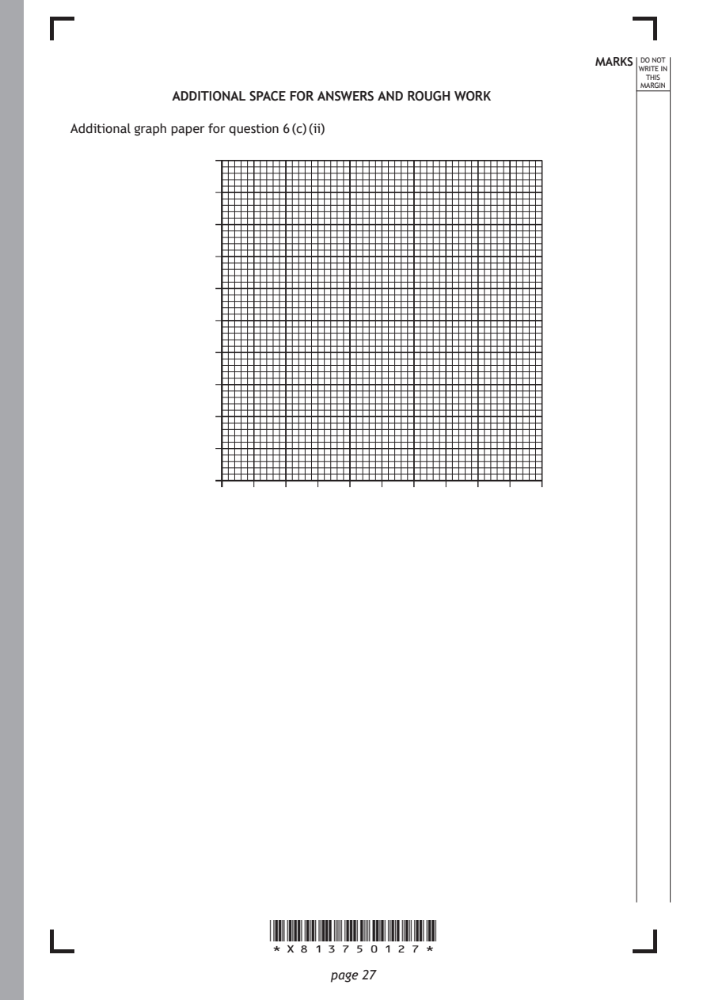
Selectable page text
MARKS _{W}^{D}_{R}^{O}_{I} _{T}^{N}OT
E IN
THIS
MARGIN
ADDITIONAL SPACE FOR ANSWERS AND ROUGH WORK
Additional graph paper for question 6 (c) (ii)
*X813750127*
page 27PDF page 28
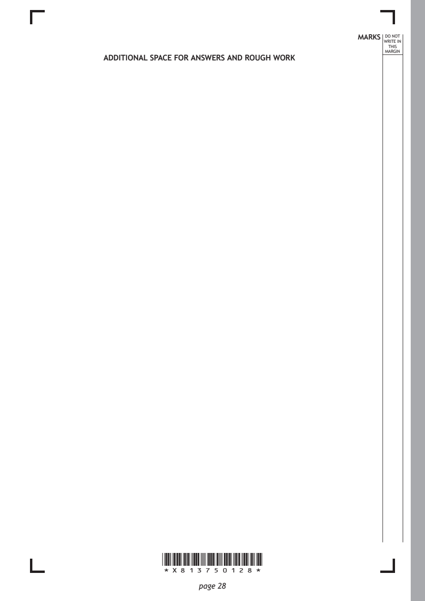
Selectable page text
MARKS _{W}^{D}_{R}^{O}_{I} _{T}^{N}OT
E IN
THIS
MARGIN
ADDITIONAL SPACE FOR ANSWERS AND ROUGH WORK
*X813750128*
page 28PDF page 29
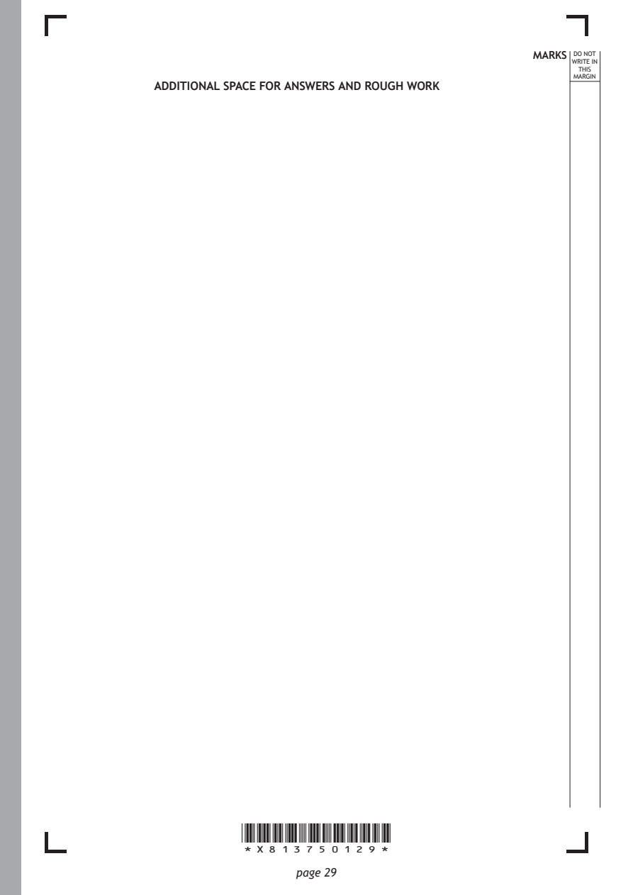
Selectable page text
MARKS _{W}^{D}_{R}^{O}_{I} _{T}^{N}OT
E IN
THIS
MARGIN
ADDITIONAL SPACE FOR ANSWERS AND ROUGH WORK
*X813750129*
page 29PDF page 30
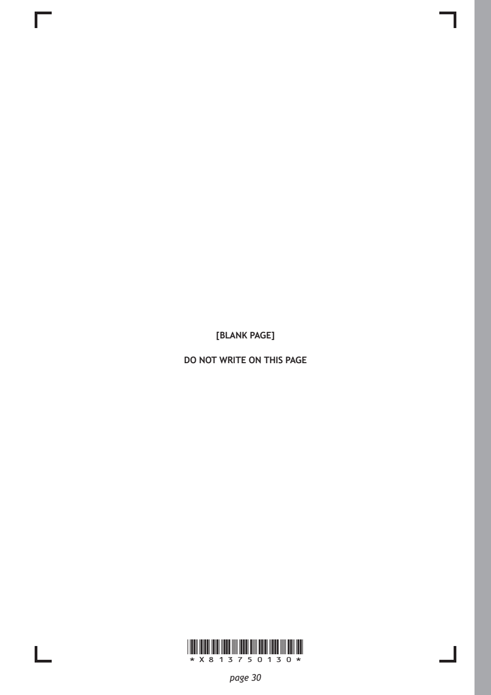
Selectable page text
[BLANK PAGE]
DO NOT WRITE ON THIS PAGE
*X813750130*
page 30PDF page 31
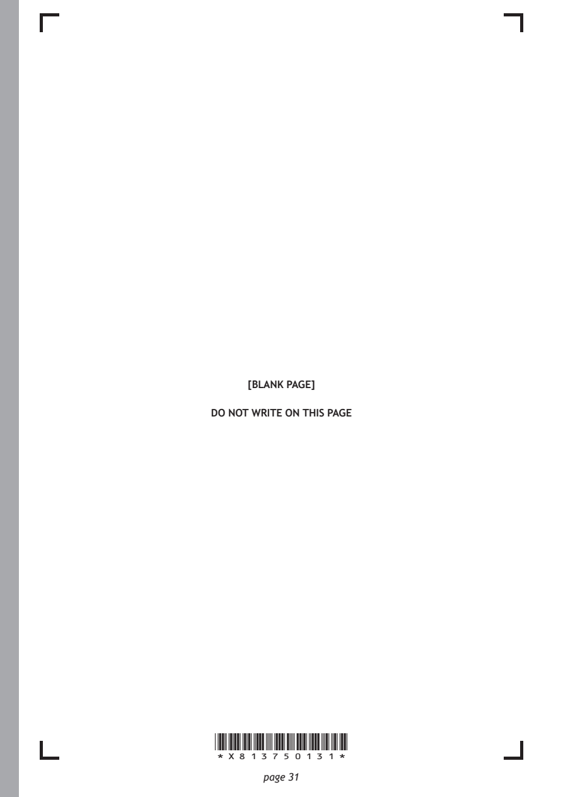
Selectable page text
[BLANK PAGE]
DO NOT WRITE ON THIS PAGE
*X813750131*
page 31PDF page 32
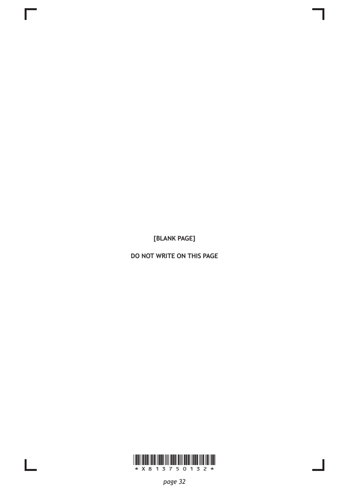
Selectable page text
[BLANK PAGE]
DO NOT WRITE ON THIS PAGE
*X813750132*
page 32